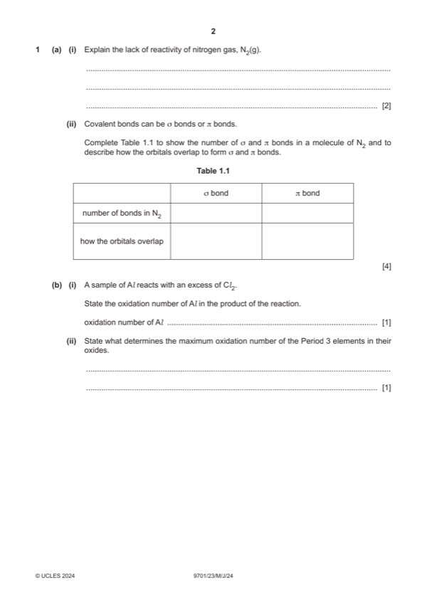

Question 1

Original paper page 2
Part 1(a)(i) — solution
- [M1] (N2 molecules /molecule(s) of N2) have a strong triple (covalent) bond 2
- [M2] (N2 molecules /molecule(s) of N2) are non-polar
Mark points
- [M1] (N2 molecules /molecule(s) of N2) have a strong triple (covalent) bond 2
- [M2] (N2 molecules /molecule(s) of N2) are non-polar
Part 1(a)(ii) — solution
Answer: 4
4
𝜎 bond 𝜋 bond
no of bonds 1 2
how orbitals direct (orbital overlap) sideways (overlap
overlap of adjacent p orbitals)
Mark points
- Correct result: 4
Part 1(b)(i) — solution
(+)III 1
Mark points
- Include the ideas shown in the solution above.
Part 1(b)(ii) — solution
number of outer / valence electrons 1
Mark points
- Include the ideas shown in the solution above.
Part 1(c)(i) — solution
both states shown as solid 1
Mark points
- Include the ideas shown in the solution above.
Part 1(c)(ii) — solution
- [M1] correctly balanced equation for aluminium oxide 2
- [M2] correctly balanced equation for P4O10 and an excess of NaOH
Mark points
- [M1] correctly balanced equation for aluminium oxide 2
- [M2] correctly balanced equation for P4O10 and an excess of NaOH
Part 1(d)(i) — solution
(+)IV 1
Mark points
- Include the ideas shown in the solution above.
Part 1(d)(ii) — solution
thermal decomposition 1
University Press & Assessment 2024 Page 6 of 11
9701/23 Cambridge International AS & A Level – Mark Scheme May/June 2024
Mark points
- Include the ideas shown in the solution above.